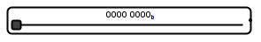

Glissière
Glissière
| Librairie : | Input/Output Extra |
| Introduction : | 2.15 dans Logisim ITA Component |
| Apparence : |  |
Comportement
Qaund on déplace le curseur, la position de celui-ci est copiée au fur et à mesure sur le port de sortie. La valeur pour la position minimum est 0. La valeur pour la position maximum est le maximum de l'attribut largeur de donnée.
Le sens de déplacement du curseur du minimum vers le maximum est défini par l'attribut Direction.
Broches
- A l'est
- Sortie : Donnée - Cette broche présente une valeur qui correspond à la position du curseur.
Attributs
Lorsque le composant est sélectionné ou ajouté, les touches fléchées modifient son attribut Orientation.
- Orientation
- La position de la sortie par rapport au composant,
- largeur de donnée
- La largeur de donnée du bus de sortie.
- Base
- La base des nombres de l'affichage de la position du curseur.
- Couleur
- La couleur du fond de la glissière.
- Étiquette
- Le texte de l'étiquette associée au composant.
- Police de l'étiquette
- La police de caractères avec laquelle l'étiquette doit être affichée.
- Étiquettee visible
- Si l'étiquette est affichée ou pas.
- Direction
- Précise le sens de déplacement du curseur de sa valeur minimum à sa valeur maximum.
Comportement de l'outil pousser
Un clic gauche maintenu sur le curseur permet de le déplacer.
Comportement de l'outil texte
Permets de modifier l'étiquette associée au composant.
Retour à Référence de la bibliothèque